Processo manual
Vídeo acelerado
Cotas feitas à mão
Selecionar, posicionar e repetir em cada ambiente.
Tempo no cronômetro3min59s
Menos repetição.
Mais possibilidades.
Escolha uma ferramenta. Veja a documentação acontecer.
A virada de chave
Você não foi contratado para repetir o que o modelo já sabe. Foi contratado para projetar, coordenar e tomar decisões.
Para pra pensar...
Some as horas dedicadas à criação de vistas, às cotas e à montagem de pranchas. Ajuste os valores e veja quanto esse tempo representa no ano.
E se a parte repetitiva não precisasse ocupar tanto espaço no seu dia?
Entenda como o DocFlow entra na sua rotina.Quanto tempo você levaria para cotar uma planta como essa?
Compare o processo manual com a execução usando o DocFlow.
Selecionar, posicionar e repetir em cada ambiente.
Executar o comando e conferir as cotas prontas no modelo.
Escolha uma ferramenta e acompanhe o DocFlow executando cada etapa no projeto.
Da criação das vistas até a montagem e exportação de pranchas. Um conjunto de comandos para diferentes etapas do seu projeto, na mesma aba do Revit.
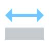
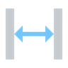
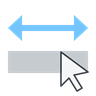
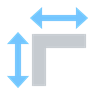
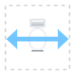
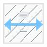
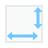
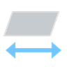
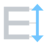
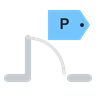
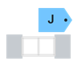
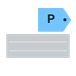
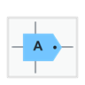
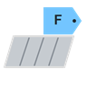
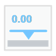
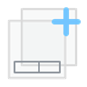
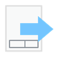
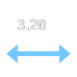
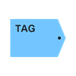
Defina como as cotas, vistas e tags devem ser criadas de acordo com o padrão do seu escritório.
Defina tipos, afastamentos, referências e regras de cada comando.
Salve combinações e alterne entre escritórios ou projetos.
Ajuste cotas, vistas e tags sem interromper seu fluxo de trabalho.

O plano anual inclui todas as ferramentas do DocFlow ARQ e as atualizações durante a assinatura.
Licença individual · ativação pelo e-mail da compra · compatível com Revit 2023 a 2027
Ao garantir a condição de fundador, você tem 15 dias para experimentar as ferramentas de cotas, vistas e pranchas em um projeto seu. Se não fizer sentido para sua rotina, solicite o reembolso dentro desse prazo.
A versão atual foi validada e funciona do Revit 2023 ao Revit 2027.
Não. O DocFlow instala uma aba própria na ribbon do Revit. Você configura pelas janelas do plugin e executa pelos botões.
As cotas, vistas e pranchas já criadas permanecem no arquivo. Ao término do acesso, você deixa de executar os comandos do plugin, mas mantém o trabalho produzido.
Você pode ajustar as opções das ferramentas e usar modelos de organização de pranchas. Nas cotas de famílias, o resultado depende das referências disponíveis em cada família do projeto.
A internet é necessária para ativação e revalidações periódicas da assinatura. O plugin mantém uma tolerância protegida para indisponibilidades temporárias.
Você escolhe as ferramentas e configura cada tarefa. O DocFlow ajuda a gerar cotas, vistas e pranchas; a escolha do que documentar e a revisão técnica continuam com você.
A oferta de fundador garante o plano anual por R$ 597 à vista ou em 12x de R$ 59,90, além de uma garantia exclusiva de 15 dias. Você mantém a renovação por R$ 597/ano enquanto a assinatura permanecer ativa. Alunos BIM Coder elegíveis pagam R$ 497 à vista ou 12x de R$ 49,90. Se cancelar e voltar depois, será aplicado o preço vigente.
Depois da confirmação da compra, você recebe as orientações de acesso e ativa o DocFlow usando o mesmo e-mail do checkout.
15 dias de garantia para fundadores · Revit 2023 a 2027 · suporte em português